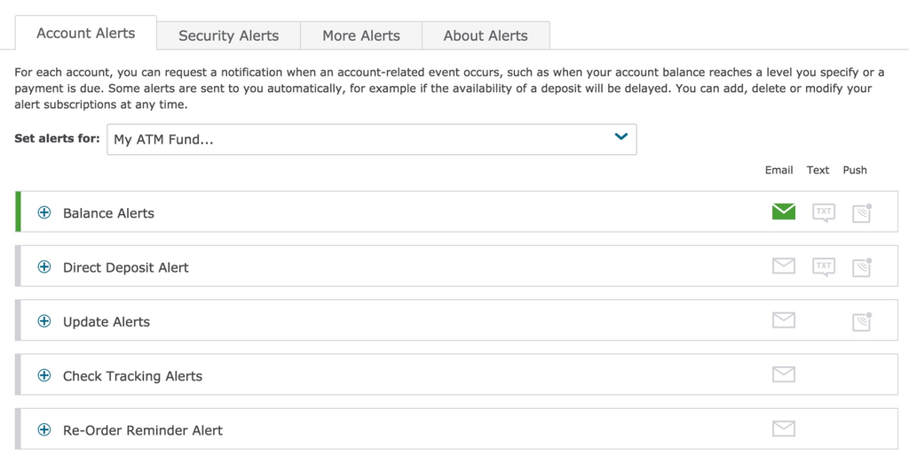
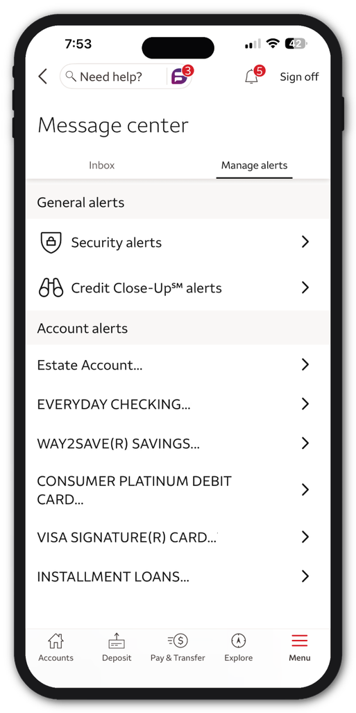
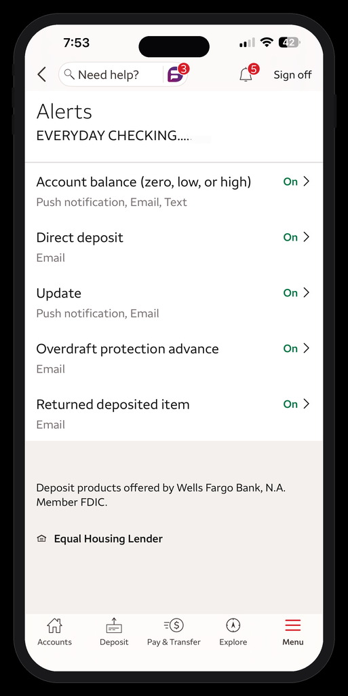

As Senior Design Lead in 2015, I was tasked with redesigning the Wells Fargo Alerts Center, which at the time relied on a single, lengthy form that frequently confused customers. Making changes in one section could unintentionally alter settings elsewhere on the form, often in areas that were no longer visible, leading to errors and frustration.
To better understand the landscape, I conducted a competitive analysis and discovered that every major competitor had adopted the same complex, form-based approach. Rather than iterating on an industry standard that wasn't serving users well, this presented an opportunity to rethink the experience from the ground up.
I opted for an Account Tile approach.

Customers could select an account from the dropdown menu to view the alerts available for that specific account. Each alert was presented as a tile displaying its available delivery methods. Selecting a tile expanded it to reveal its configuration options. While some alerts required only a simple on/off toggle, others offered more advanced settings and customization based on the alert type.
The redesigned experience was met with overwhelmingly positive feedback from both customers and stakeholders.
askdavetaylor.com/set-low-balance-alerts-wells-fargo-account →
The design shown above was originally created with a tablet-first approach. I later adapted and optimized it for mobile and desktop to ensure a seamless experience across devices. After extensive discussions, executive leadership approved the use of chevrons, giving me the opportunity to further refine the design and improve the overall user experience.
In 2023, as Senior Design Manager, I led the redesign of the Alerts Center experience across desktop, tablet, and mobile platforms, overseeing strategy, execution, and cross-functional collaboration from concept through delivery.


According to Javelin Strategy & Research, approximately 26% of Wells Fargo customers actively use digital account alerts—representing an estimated 18 million customers.